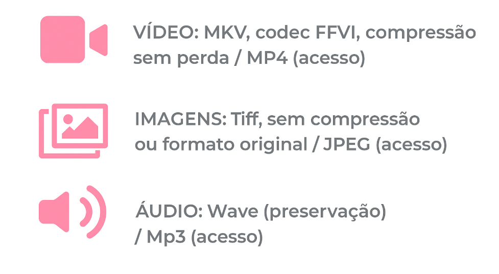
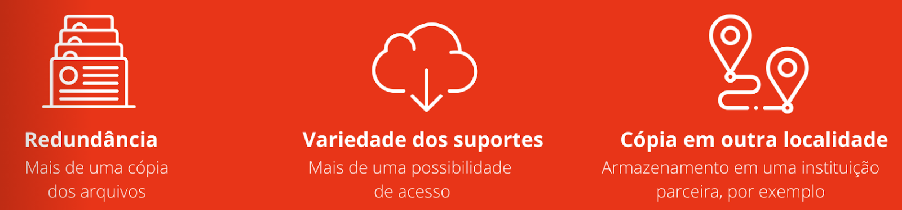

É comum associarmos segurança ou preservação de arquivos digitais com práticas de backup. No entanto, embora o backup seja uma parte fundamental, a preservação digital não se limita apenas a esta prática
Assim como coleções e documentos físicos exigem uma série de cuidados contínuos, documentos e arquivos digitais também necessitam de processos que garantam a eles vida longa, mesmo com a obsolescência das tecnologias.
É por meio do estabelecimento destas ações contínuas que se garantirá que os arquivos possam ser acessados por muito tempo, desde sua criação até a socialização para o público. Uma vez estabelecidos protocolos de coleta, organização, catalogação, armazenamento e verificação rotineiras, nos certificamos de que os documentos e arquivos digitais manterão suas características originais e serão evitados a corrupção dos arquivos e a perda de conteúdo.
Nesta cartilha vamos abordar algumas das principais medidas a serem consideradas para cada um destes pontos.
Integridade
É fundamental garantir a transferência de arquivos sem qualquer alteração ou compressão. Para demonstrar que este processo se deu de forma segura, é importante acompanhar detalhadamente a cópia dos arquivos, se possível verificando as suas hashes.
Hashes ou checksums são valores em letras e números atribuídos a cada arquivo digital de forma exclusiva, como se para cada um fosse dado um CPF, que o identifica individualmente. Ao se copiar um arquivo, pode-se verificar que os hashes do arquivo original e da cópia são iguais, demonstrando que são cópias exatas. Em contrapartida, se os arquivos apresentarem hashes incompatíveis após a copiagem fica evidenciado que houve algum tipo de alteração ou o arquivo copiado foi corrompido de alguma forma.
Backup de dispositivos
Quanto à cópia, é importante definir que tipo de cópia será o ideal para cada caso. Embora relacionados, imagem de disco e cópia lógica são conceitos diferentes. Uma imagem de disco é uma cópia bit a bit de um disco rígido ou partição, incluindo todos os dados (mesmo excluídos ou não alocados) e a estrutura do disco. Já uma cópia lógica copia apenas os arquivos visíveis e acessíveis pelo sistema operacional, ignorando dados não alocados e a estrutura física do disco:
| Imagem de Disco | Cópia Lógica |
|---|---|
| Cópia completa: réplica exata do disco, incluindo todos os dados, setores, sistema de arquivos e estrutura de partições. | Cópia de dados: apenas arquivos e pastas, preservando a estrutura lógica do sistema de arquivos e ignorando detalhes de baixo nível. |
| Recuperação completa: permite restaurar totalmente o disco, incluindo sistema operacional, arquivos e configurações originais. | Recuperação seletiva: possibilita restaurar arquivos específicos, mas não garante a restauração total do sistema operacional. |
| Tamanho maior: arquivo final geralmente grande, pois copia todos os dados, inclusive os não utilizados. | Tamanho menor: normalmente resulta em backup menor, pois copia apenas dados relevantes. |
| Exemplos: criação de um arquivo ISO de um DVD; backup completo de um disco rígido. | Exemplos: cópia de arquivos para um disco externo; backup de arquivos via software específico. |
Ao realizar uma cópia lógica é importante utilizar ferramentas que possam criar e verificar as hashes, tais como o Robocopy (utilitários do Windows), Rsync (Linux, macOS) ou TeraCopy (macOS, Windows).
É importante verificar a compatibilidade do armazenamento utilizado com o sistema operacional do computador (Windows, macOS, Linux). O sistema de arquivos configurado afeta a compatibilidade, o desempenho e o tamanho máximo dos arquivos:
- Windows + macOS: use exFAT (melhor equilíbrio).
- Somente Windows: use NTFS (recursos completos).
- Somente Mac: use APFS (para SSDs) ou HFS+ (para HDDs/Macs antigos).
- Compatibilidade máxima: use FAT32 (se não houver arquivos >4 GB).
- Linux: use ext4.
O armazenamento mais comum é feito em HDDs ou SSDs. O primeiro usa partes mecânicas, como discos magnéticos que giram, para armazenar dados, enquanto o segundo utiliza memória flash, sem partes móveis. As principais diferenças entre estas unidades de armazenamento são:
| HDD (Hard Disk Drive) | SSD (Solid State Drive) | |
|---|---|---|
| Custo | Mais baratos, especialmente em altas capacidades. | Mais caros por tecnologia mais atualizada e melhor desempenho. |
| Velocidade | Mais lentos, especialmente em gravação. | Mais rápidos para leitura e escrita. |
| Confiabilidade | Suscetíveis a falhas mecânicas, mas com mais chance de recuperação. | Mais confiáveis a longo prazo (sem partes móveis). |
| Conectividade | USB-C (rápido) ou USB-A (comum). | USB-C ou NVMe em equipamentos modernos (muito rápidos). |
Gestão de metadados e catalogação
A definição mais simples sobre metadados que podemos encontrar é: metadados são dados sobre dados. Embora isso possa parecer abstrato, na prática é algo bastante concreto, se considerarmos uma faixa musical como exemplo os metadados seriam o/a artista, a data de lançamento, a duração, os créditos de publicação e composição, o tamanho do arquivo, entre outros. São informações que não consistem na música em si ou em seu conteúdo, mas apresentam detalhes importantes para classificar a obra e dar contexto a ela.
Considerando-se o grande volume de dados digitais que geramos todos os dias, gerir estes dados torna-se uma tarefa indispensável. A gestão dos metadados não apenas melhora o acesso dados, mas também pode facilitar a integração destes em diferentes bases ou sistemas.
Catalogar significa organizar informações de forma estruturada para que seus arquivos possam ser encontrados e utilizados. Um catálogo pode incluir informações descritivas, contextuais, detalhes técnicos, informações sobre direitos autorais, palavras-chave e muito mais, variando de informações básicas a descrições aprofundadas. Algum tipo de catalogação é crucial para garantir o acesso futuro, principalmente para acervos maiores. O fundamental aqui é garantir a estruturação de um sistema consistente para esta classificação, o importante é que ele seja acessível e de fato funcione para quem está catalogando.
Vale reforçar, que a catalogação visa facilitar a localização dos conteúdos gerados. Se não fizer sentido ou for de difícil compreensão, então apenas algumas pessoas conseguirão acessá-los – o que não é o nosso objetivo. Se o padrão adotado não for adequado ou tornar-se obsoleto ele pode e deve ser revisto e substituído. As normas devem ser escritas e publicadas, sendo importante que essas regras adotadas estejam disponíveis e de fácil consulta e conhecimento a todos os envolvidos no processo de catalogação.
Com isso em vista, é essencial o papel que cumpre o uso de uma ficha catalográfica, planilha e/ou uma base de dados em um sistema para a catalogação de acervos. Quanto mais ampla a quantidade e a qualidade de informações sobre alguma coisa, mais fácil será sua localização posterior, bem como seu acesso e uso.
Preservação dos conteúdos
Ao se preservar um arquivo digital não adianta preservar apenas a sua estrutura (bits), mas também as formas de acessá-los e de garantir sua leitura. Neste sentido, preservar aqui significa, essencialmente, permitir que estes arquivos permaneçam no tempo. É essencial criar estratégias e instrumentos que permitam sua localização, seu uso e o crescimento ordenado dos conteúdos.
É importante manter uma organização estruturada de diretórios/pastas que seja coerente e nomear claramente estas pastas. Uma boa organização ajuda a manter os arquivos de acordo com sua origem e na garantia de que estes não sejam perdidos ou substituídos acidentalmente. Algumas boas práticas incluem:
- Dê nomes aos arquivos digitais de forma consistente, criando um modelo de nomenclatura com códigos identificadores exclusivos para ajudar a organizar e distinguir seus arquivos.
- Não use caracteres especiais como @#$%&*:”’ <>?/\~|, acentos ou espaços em nomes de pastas ou arquivos. É possível usar o subtraço (_).
- Guarde os registros em um “pacote de informações”: uma pasta autodescritiva que pode incluir documentação ou metadados relacionados, como por exemplo 202511_ubatuba_oficina_limpeza_praias.
Assim como para os documentos físicos (papel, fotografias, etc), devemos considerar suportes adequados para a sua preservação, com arquivos digitais devemos nos atentar à extensão e formatos. De modo geral, dê preferência aos formatos não-proprietários e sem compressão ou com compressão sem perda para a preservação, e formatos mais leves para acesso:

Fonte: A “Declaração de Formatos Recomendados” (RFS) é um documento periodicamente atualizado da Biblioteca do Congresso estadunidense que identifica os formatos preferenciais para obras e documentos digitais, a fim de garantir sua acessibilidade e preservação a longo prazo. Disponível em: https://www.loc.gov/preservation/resources/rfs/index.html
Armazenamento
Entretanto, independentemente do tipo de mídia ou dispositivo utilizado, nenhum durará para sempre. A vida útil real de uma mídia depende de muitos fatores, como seu ambiente e uso. Boas práticas de armazenamento digitais consideram a escolha de armazenamento, backup constante e monitoramento ativo apropriados.
Uma palavra-chave para o armazenamento digital é a redundância. Uma solução básica que pode ser adotada é o sistema 3-2-1, que consiste no seguinte esquema:

O sistema funciona de acordo com esta lógica: no mínimo três cópias; ao menos dois suportes distintos; se possível uma outra localidade com cópia de backup e ao menos um acesso offline, que não dependa de conexão com a internet. É importante lembrar aqui que, para qualquer que seja a escolha adotada, os dispositivos de armazenamento precisam de manutenção regular.
Referencias
-
Conceitos gerais & guias
- CONARQ – Publicações e orientações em preservação digital
https://www.gov.br/conarq/pt-br/centrais-de-conteudo/publicacoes/publicacoes-conarq - Witness – Guia rápido para preservação digital de vídeos
https://portugues.witness.org/portfolio_page/guia-rapido-para-preservacao-digital-de-videos/ - PREMIS – Understanding PREMIS (Português)
https://loc.gov/standards/premis/understandingPREMIS_portuguese_2021.pdf - Coalizão para a Preservação Digital (DPC - Digital Preservation Coalition) – Manual de Preservação Digital
https://www.dpconline.org/handbook
-
Normativas e padrões
- SPECTRUM 4.0 – Padrão internacional de gestão de coleções (PT-BR)
https://spectrum-pt.org/wp-content/uploads/2021/03/Spectrum_PT_NET.pdf - NOBRADE – Norma Brasileira de Descrição Arquivística (CONARQ)
https://www.gov.br/conarq/pt-br/centrais-de-conteudo/publicacoes/nobrade.pdf - OAIS – Modelo de Referência para Sistema Aberto de Arquivamento de Informação (ISO 14721)
Página oficial ISO: https://www.iso.org/standard/57284.html
*Traduções e sínteses em português podem ser encontradas em repositórios institucionais, como da USP e do Arquivo Nacional. - Dublin Core - Padrão de elementos de metadados simples usado para descrever recursos digitais e físicos.
https://www.dublincore.org/
-
Manuais e cursos
- Manual “Acervos Digitais nos Museus” – IBRAM.
https://www.museus.gov.br/wp-content/uploads/2021/05/Acervos-Digitais-nos-Museus.pdf - Museu Portátil – Manual (Edição de Bolso).
https://pt.wikipedia.org/wiki/Ficheiro:Museu_Portatil_Edi%C3%A7%C3%A3o_de_Bolso_Manual_2022.pdf - Curso – Acervos Digitais nos Museus (EVG).
https://www.escolavirtual.gov.br/curso/908
-
Políticas de preservação digital
- Pinacoteca do Estado de São Paulo – Política de Preservação (2019).
https://pinacoteca.org.br/wp-content/uploads/2022/07/Politica-de-Preservacao-2019.pdf - Arquivo Nacional – Recomendações para Política de Preservação Digital.
https://www.gov.br/arquivonacional/pt-br/servicos/gestao-de-documentos/orientacao-tecnica-1/recomendacoes-tecnicas-1/politica_presercacao_digital.pdf - Library of Congress – Recommended Formats Statement (2025–2026)
A Recommended Formats Statement lista formatos preferenciais para longo prazo, por tipo de material.
]https://www.loc.gov/preservation/resources/rfs/index.html - The Theory and Craft of Digital Preservation – Trevor Owens (2018)
Obra introdutória e prática sobre princípios e implementação de preservação digital.
https://osf.io/preprints/lissa/rry2x/ - DROID (Linux/macOS/Windows – identificação automática de formatos)
- MediaInfo (Linux/macOS/Windows – leitura de propriedades técnicas de arquivos áudio/audiovisual)
- Proofmode (Android/iOS)
- Tella (Android/iOS)
- Exiftool (macOS/Windows)
- MediaInfo (Linux/macOS/Windows)
- MD5Checker (Windows)
- Hash Droid (Android)
- MD5 (macOS)
- QuickHash (Linux/macOS/Windows)
- TeraCopy (macOS/Windows)
- Robocopy (Windows)
- Rsync (Linux/macOS)
- TeraCopy (macOS/Windows)
- BagIt (Linux/macOS/Windows)
- Bagger (Linux/macOS/Windows)
- Exactly (macOS/Windows)
- Tainacan (WordPress)
- Mukurtu (Drupal)
- Mukurtu (Drupal)
- Uwazi (Linux ou hospedado)
- Páramo (PHP e MySQL)
- Audacity (áudio)
- Fmpeg (audiovisual)
-
Referências em outras línguas
Softwares, ferramentas e plataformas
Tivemos nesta seleção preferência por ferramentas estáveis, amplamente utilizadas em instituições de memória, com documentação confiável, idealmente em distribuição de código-livre (open-source), e que permitam reprodutibilidade dos processos.
-
Identificação / análise de formatos
-
Captura/gravação de metadados
-
Leitura/inclusão de metadados
-
Hashing / verificação de integridade
-
Cópia / migração de arquivos / sincronização
-
Empacotamento / preparação para preservação
-
Catalogação / acesso / publicação de acervos
-
Conversão de arquivos
O Museu da Pessoa é um museu virtual e colaborativo que desde 1991 se dedica a preservar e disseminar histórias de vidas de toda e qualquer pessoa. Para desenvolver este material, contou com a parceria da WITNESS, organização global que auxilia pessoas a usar a tecnologia audiovisual para contar suas histórias, e em defesa dos direitos humanos.
Conheça mais em:
Ficha Técnica
Coordenação de Projeto: Felipe Rocha
Coordenação da Produção: Marcos Terra
Pesquisa e textos: Felipe Rocha
Consultoria Técnica: WITNESS
Revisão Técnica: Ines Aisengart Menezes
Projeto Gráfico: Mariana Afonso
Web desenvolvimento:Elsa Villon
Museu da Pessoa
Associados:> Ana Wilheim | Carla Nóbrega | Carlos Seabra | Carolina Misorelli | Celia Picon | Cláudia Leonor | Elza Lobo (in memorian) | Fernando Von Oertzen | Heloísa Nogueira | Immaculada Prieto | Iris Kantor | José Santos Matos | José Guilherme Mauger | Karen Worcman | Luiz Egypto de Cerqueira | Marcia Trezza | Maria Francisca dos Santos e Passos | Mauro Malin | Roberto da Silva (in memorian)| Rosali Nunes Henriques | Rosana Miziara | Sandra Sinicco | Sergio Ajzenberg (in memoriam) | Sonia London | Silvia Carvalho | Zilda Kessel
Conselho Diretor:Conselho Diretor Karen Worcman (Presidente) | Beatriz Azeredo | Denise Barbosa | Jairo Duarte | Maria Francisca dos Santos e Passos | Marcos Oliveira | Tom Mendes
Conselho Fiscal:José Guilherme Mauger | Leandro Salatti | Antonio Salles
Conselho Honorário:Alberto Dines (in memoriam) | Celia Picon | Danilo Miranda (in memoriam) | Eliezer Batista (in memoriam) | José Eduardo Bandeira de Mello | Lisandra Alves | Octavio Barros | Paul Thompson | Paulo Nassar | Roberto da Silva (in memoriam) | Tom Gillespie | Wellington Nogueira
Comitê Gestor:Beatriz Azeredo | Carla Nobrega | Gustavo Gonzaga | Tiago Lara
Comitê de Compliance:Cynara Reinert | José Guilherme Mauger | Luiz Egypto de Cerqueira| Maria Francisca Passos
Comitê Curatorial:Bel Santos Mayer | Barbara Trugillo | Paulo Endo
Direção Executiva:Karen Worcman | Marcos Terra
Relações Institucionais e Governamentais:Rosana Miziara | Anna Miranda
Museologia:Lucas Lara | Felipe Rocha | Renata Pante | Beatriz Saghaard | Teresa de Carvalho | Paola Valentina Xavier | Priscila Gomes | Estfani da Costa | Jefferson Trindade | Charles Pankararu | Nicolau da Conceição | Grace Jacobson
Colaboração:Marcela Lanza Tripoli | Marcia Trezza | Jonas Samaúma | Aline Scolfaro | Sônia Helena London | Levi Andrade
Museu Digital:Odilon Gonçalves | Amanda Lira | Isadora Catem Santos | Leandro Almeida | Thiago Magalhães | Ariane Permonian | Ana Gomes | Milena López
Gestão e Operação:Allan Russo Fava | Dalci Alves da Silva | Eduardo Valente | Juliana Gervaes | Larissa Pinna | Lucas Torigoe | Ane Alves | Bruna Gelangauskas | Lynda Dixon | Alice Silva | Luiza Gallo | Bruna Ghirardello | Samantha Xavier | Sofia Petro